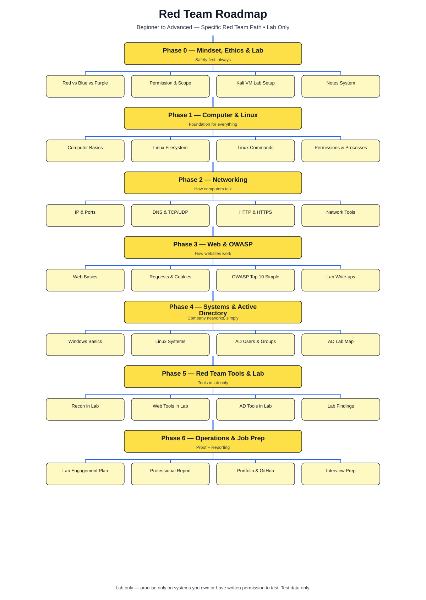
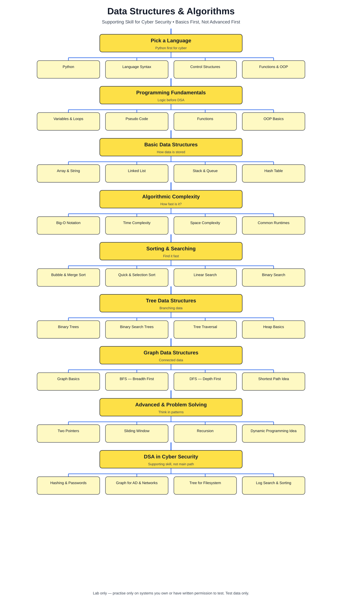

Safety: Lab only — practise only on systems you own or have written permission to test. Test data only.
These diagrams are maps, not shortcuts. Read a box, then read its detailed text file, do the lab, write notes, and explain it. Full box-by-box mapping is in Roadmap/README.md.
Main path. Follow top to bottom: Phase 0 Mindset & Lab → Phase 1 Linux → Phase 2 Networks → Phase 3 Web & OWASP → Phase 4 Systems & AD → Phase 5 Tools in Lab → Phase 6 Operations & Job Prep.
Text files: 01-roadmap/overview.md • 02-fundamentals/computer-basics.md • 02-fundamentals/linux-filesystem.md • 02-fundamentals/linux-commands.md

Supporting path, not the main path. Learn basics alongside Python and labs: Language → Fundamentals → Basic Structures → Complexity → Sorting & Searching → Trees → Graphs → Problem Solving → DSA in Cyber.
Use it when a red-team topic needs a DSA idea — hashing, graphs for AD/networks, trees for filesystem, searching logs.

Back to Roadmap README — how to read both diagrams, box by box